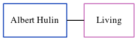

Albert N Hulin
[ Home ] | [ Calendar ] | [ Surnames Index ] | [ Census Index ] | [ Family History ]Albert Hulin, the husband of Sally B Cowell (the third cousin on the mother's side of Nigel Horne), and married Sally in Newbury, Berkshire, England around Feb 19791.
Citations
- England & Wales marriages 1837-2008 - Findmypast
Media
England & Wales marriages 1837-2008 - BMD/M/1979/1/AZ/000546/120
Family Tree
Generated by ged2site. Last updated on Jun 11, 2024